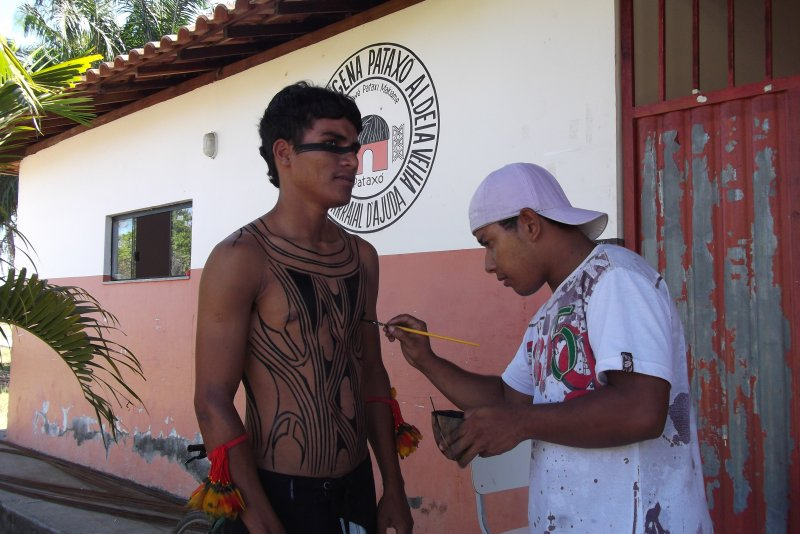

Ontem Regis Bailux soube de algo que vai mudar um pouco o fluxo da zona impermanente Bailux. O espaço em que fica "sediado", e que é administrado pela Associação Filhos do céu, provavelmente, será reformado e usado como consultório dentário. Assim, um outro lugar seria destinado ao Bailux.

Regis está trabalhando com as atividades do Bailux no Ponto de Cultura da Aldeia Pataxó e na farmácia viva da pajé Jaçanã:
A comunidade é acolhedora e existe forte motivação para o aprendizado e apropriação dos conhecimentos. Eles querem uma célula do Bailux junto ao Ponto de Cultura, onde poderemos criar uma interação entre os pataxós da aldeia e os bailuxs com a metareciclagem, experimentações tecnológicas e meio ambiente.
Regis o que você está achando de todo esse processo?leia mais >>